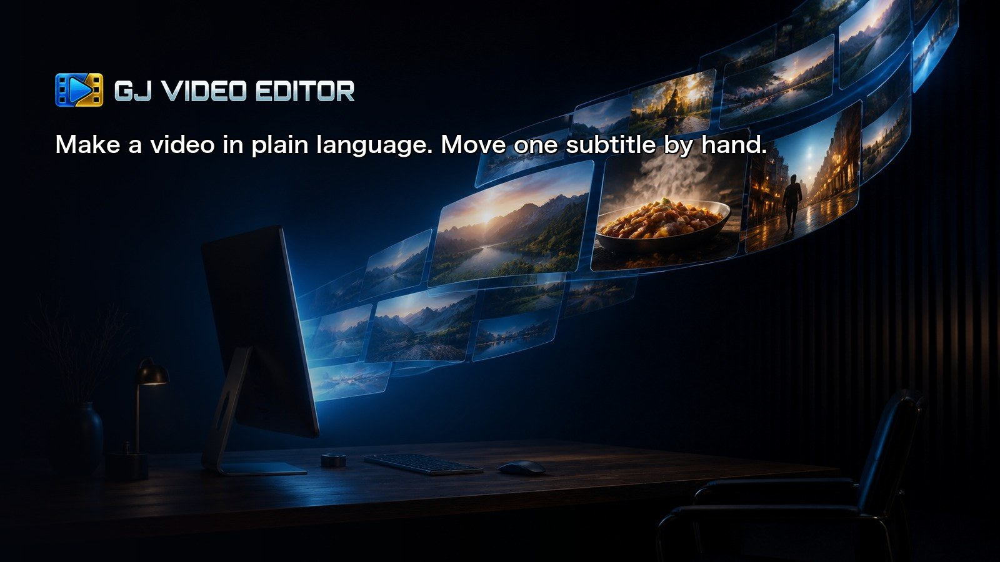
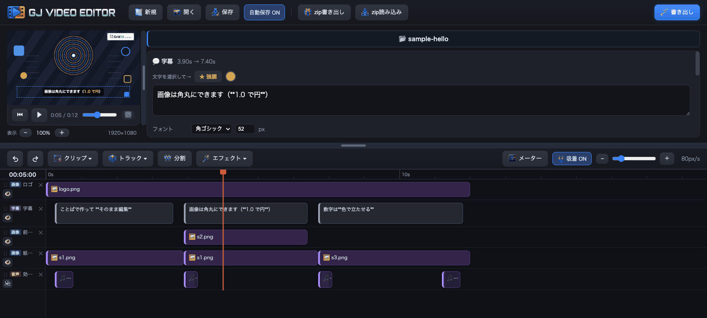
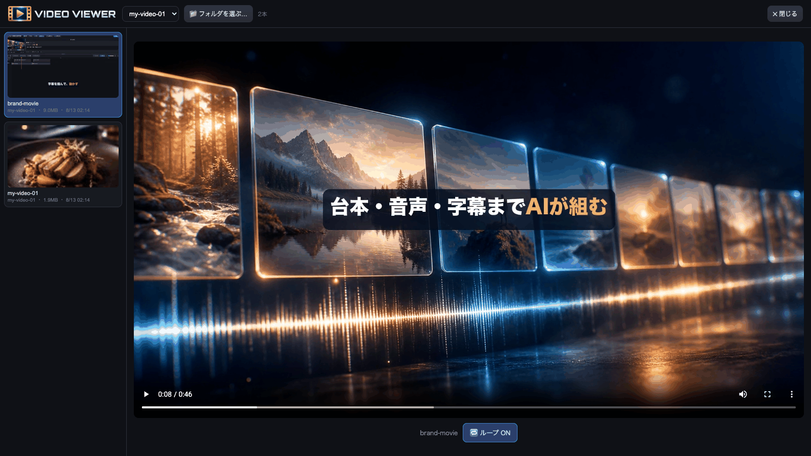
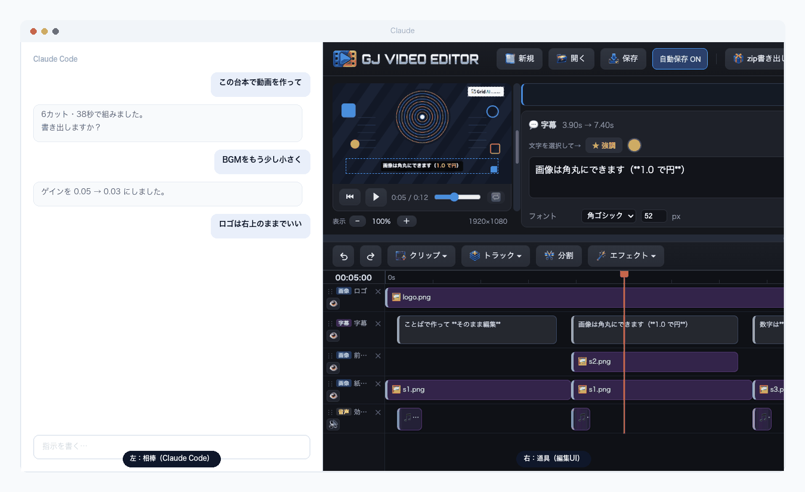

Work in progress · v0.16.0
Describe the video you want and the AI assembles the script, the narration and the subtitles. When something needs changing, drag the subtitle yourself or just ask again — whichever is quicker.
Python standard library + Pillow + ffmpeg. No cloud, no API keys.

Have an AI make you a video and what usually comes out is code — React, HTML. To change one thing you either read the code or go back to prompting.
Here, both the AI and you edit a single project.json.
Fix things by hand, or ask the AI to. Whichever suits the moment.

The workspace. This sample runs right after you clone.
"Turn the music down a bit", "move the logo to the top right" — dozens of changes at once, if you like.
Half a second later, slightly to the right. Some things are faster to drag than to describe.
The AI can also read back what you changed. If you keep making the same correction, its defaults are wrong — and that's fixable.
Script, narration and subtitles were all assembled by the AI and exported as they came. Changes can be made by hand or by asking — either works.
Images generated by AI, narration by free TTS. Everything from assembly to export happened here
Vertical, horizontal or square. Change the size afterwards and the text and positions come along with it.
| Social posts | Vertical. Narrated stills, with subtitles whose numbers count up and bars that compare them |
|---|---|
| Product walkthroughs | Horizontal. Subtitles over a screen recording, with anything private blurred out |
| Clips from a recording | Keep the long file in place and pull out the parts you need. The edges stay extendable |
| Other languages | Same structure, different subtitles and narration |
Ask in plain language; script, voice and subtitles come back assembled
Move video, subtitles, images and audio around on the timeline
Unreadable subtitles and missing assets stop the export
MP4, WebM, GIF, MP3, at the quality and size you pick
The full feature list lives on GitHub.
Click the logo and GJ VIDEO VIEWER opens. Your exports are listed newest first, so you can play them back without hunting for files.

Exports on the left, player on the right. Loop playback included
Thumbnails are generated for you, and looping playback makes it easy to check how a cut joins. It opens on top of the editor, so closing it leaves your playhead and selection untouched.
Launch Claude Code from the Claude desktop app and keep the chat on the left and this editor in the preview pane on the right.

Ask, adjust and review — all in one window
| Left | Say "turn the music down a bit" or "keep the logo top-right" and the change lands |
|---|---|
| Right | A fully usable editor. You can review exported videos here too |
The repo ships a CLAUDE.md, so Claude Code already knows this tool's conventions
on the first run. And of course it works fine standalone, without Claude.
Copy the request below and send it to the AI agent you already use (Claude Code, Codex, Cursor, and so on). It handles what it can and only stops for the parts that need you. You don't need to know git or the terminal.
Please set up video-editor on this machine and get it running.
Repository: https://github.com/GridJapan/gjVideoEditor
Steps:
1. git clone it into a sensible working folder
2. Check the requirements (run `python3 tools/_deps.py` for a list).
Anything missing is printed with install instructions — follow those.
- Python 3 and ffmpeg are required (Pillow installs itself on first launch)
3. Run `python3 tools/make_sample.py` to generate the sample assets
4. Start the server with `python3 ui/server.py` and open http://localhost:8765/
Once it works, try exporting the sample video and tell me the result:
python3 renderer/render.py projects/sample-hello
Let me know if anything needs my input, such as approving an install.When a step needs your password or your approval to install something, the AI stops and tells you.
# 1. Get it
git clone https://github.com/GridJapan/gjVideoEditor.git
cd video-editor
# 2. Generate the sample assets (first time only)
python3 tools/make_sample.py
# 3. Launch — double-click start.command (Mac) or launch.bat (Windows)Your browser opens with the sample already loaded.
| Mac | Windows | |
|---|---|---|
| Python 3 | Already installed | From the Microsoft Store |
| ffmpeg | brew install ffmpeg | winget install Gyan.FFmpeg |
| Pillow | Installed automatically on first launch | |
If something is missing, the launcher tells you exactly how to install it.
Run python3 tools/_deps.py to see what you have.
The bundled sample's images and sound effects are all generated by a script in this repo. No third-party works are included, so you can redistribute it as is.
When you add your own assets, always record where they came from and under what licence. See NOTICE for details.